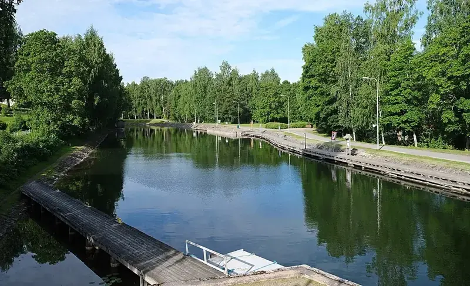
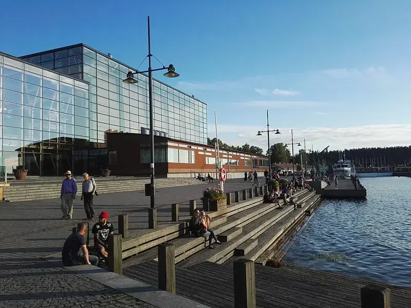
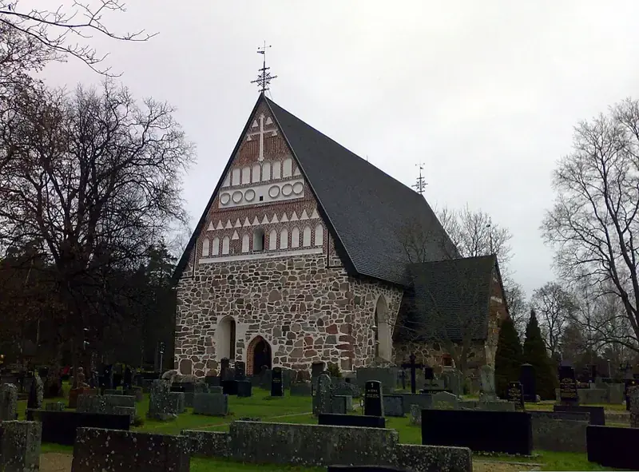
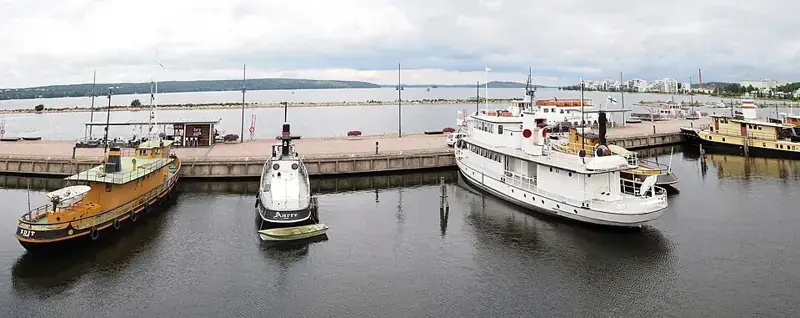

Päijät-Häme
Järvien, harjujen ja elävän kaupunkikulttuurin maakunta. Tutustu alueen parhaisiin paikkoihin.
Luonto ja retkeily
Harjut, järvet ja retkeilyreitit
🏛️Nähtävyydet ja kulttuuri
Kanavat, museot ja kulttuurikohteet
🚐Leirintäalueet ja matkaparkit
Yöpymispaikat matkan varrella
☕Kahvilat ja ravintolat
Pysähdy nauttimaan
Päijät-Hämeen kunnat
Päijät-Hämeen parhaat käyntikohteet

KanavamiljööVääksyn kanava
Historiallinen kanavamiljöö, kahviloita ja veneiden sulutusta.
Tutustu kohteeseen
KulttuuriSibeliustalo
Arkkitehtuuristaan tunnettu konserttitalo Vesijärven rannalla.
Tutustu kohteeseen
HistoriaHollolan kirkko
Keskiaikainen kivikirkko ja tunnelmallinen historiallinen ympäristö.
Tutustu kohteeseen
KaupunkielämäLahden satama
Satamakahviloita, järvimaisemia ja kävelyreittejä.
Tutustu kohteeseenPäijät-Häme matkailijalle
Päijänteen järvimaisemat, Vääksyn ja Kalkkisten kanavat, Lahden kaupunkikohteet, Hollolan historia sekä Heinolan puistot tarjoavat retkikohteita ympäri vuoden.
Vääksyn kanava ja Asikkala · Lahden nähtävyydet · Hollolan kirkonkylä
Kuvien tekijät ja käyttöoikeudet
- Vääksyn kanava: kallerna · CC BY-SA 4.0 · Kuvan lähde. Kuvakoko pienennetty, rajaus kortin mukaan.
- Sibeliustalo: Trogain · CC BY-SA 4.0 · Kuvan lähde. Kuvakoko pienennetty, rajaus kortin mukaan.
- Hollolan kirkko: Tomisti · CC BY-SA 4.0 · Kuvan lähde. Kuvakoko pienennetty, rajaus kortin mukaan.
- Lahden satama: Tiia Monto · CC BY-SA 3.0 · Kuvan lähde. Kuvakoko pienennetty, rajaus kortin mukaan.